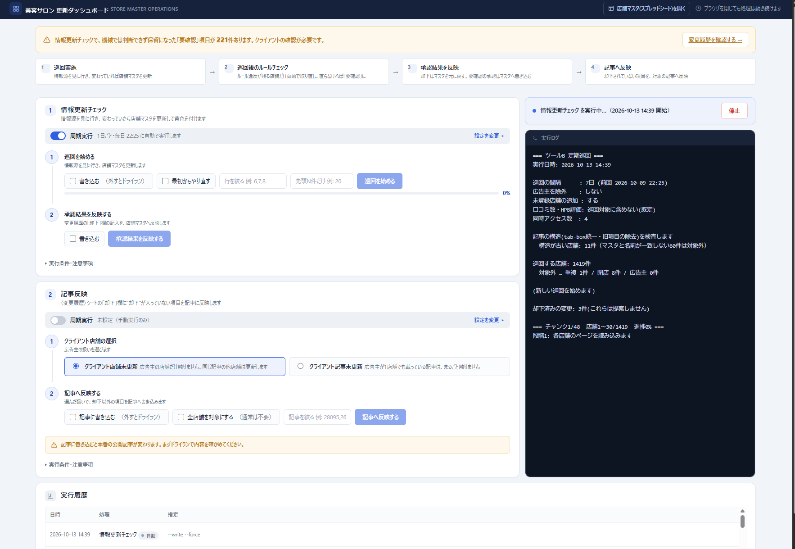

掲載店舗数・記事数が増えるほど、情報の鮮度は人力では維持できなくなります。
正となるデータがないため、記事間で表記揺れや情報の食い違いが発生します。
変更に気づく仕組みがなく、営業時間や料金が古いまま放置されがちです。
記事の構造もバラバラで一括更新ができず、確認漏れや誤更新のリスクも残ります。
情報源サイトを第一情報源（正）とし、不足項目のみ公式サイト等で補完した店舗マスタを構築。そこから記事への反映までを3つのツールで分担します。
情報源サイトを巡回し、店舗情報・料金情報をAIで抽出。不足項目のみ公式サイトで補完し、スプレッドシート上の店舗マスタへ一元化します。
既存記事内の店舗情報部分をAIが特定し、店舗マスタの最新情報に合わせて統一フォーマットへ置換。紹介文など他の部分は変更しません。
情報源を定期巡回して変更を検知・記録。担当者が承認した項目だけを、該当記事へ自動で反映します。
検知から反映まで、必ず人の承認を挟みながら進みます。
情報源サイトを巡回し、店舗情報をAIで抽出します。
店舗マスタの現在値と比較し、変更箇所をハイライトします。
日時・項目・旧値・新値を記録し、承認待ちの状態にします。
内容を確認し、記事へ反映してよい項目だけを承認します。
承認された項目だけを、該当記事へWordPress経由で反映します。
巡回・差分検知・承認結果の反映・記事反映までを1つの管理画面から実行できます。実行ログで処理内容を逐次確認でき、保留になった「要確認」項目は担当者の確認を挟んでから反映します。

情報の正確性を保ちながら、承認の手間を最小限にするための工夫を組み込んでいます。
第一情報源を優先し、不足項目のみ別ソースで補完。優先順位を機械的に適用し、情報源間の食い違いを防ぎます
全角半角や記号の違いなど表記だけの差は変更として扱わず、不要な承認を増やしません
取得した値が既存より情報が少ない場合は自動採用せず、既存の値を守ります
変更箇所をハイライトし、日時・項目・旧値・新値を記録。後から追跡・検証できます
担当者の承認を経てから記事に反映。完全自動化はせず、誤反映のリスクを抑えます
アクセスエラーや掲載終了だけでは閉店と判定せず、店舗自身の発信がある場合に限り候補とします
対象記事数・店舗数、CMSの構成（本件はWordPress／ブロックエディタ）によって設計が変わるため、個別にお見積もりします。
単発のスポット開発でも、差分検知・承認フローまで含めた継続的な業務委託支援でも対応可能です。
対応できます。比較・まとめ系メディアであれば、美容室・ネイルサロンなど他業種へも、業種固有のロジックを設定ファイル側に分離することで横展開できる設計にしています。
必須ではありません。今回は比較対象の性質上、特定の予約サイトを正としていますが、利用規約・robots.txtの範囲内でアクセスできるサイトであれば、別のサイトを正にする設計も可能です。
いいえ。検知した変更内容は、担当者が変更履歴を確認し承認してから初めて記事に反映されます。完全自動化はせず、人の確認を必須にしています。
店舗情報部分のみを対象にした置換ロジックのため、紹介文など他の部分は変更しません。
ローカル環境での動作確認→数記事での下書きテスト→全記事展開、という3段階を踏んでから本番展開するため、本番環境にいきなり反映することはありません。
アクセスエラーや掲載期間終了だけでは閉店と判定しません。店舗自身の発信で閉店が明言されている場合のみ候補とし、承認後に記事側を「閉店しました」の表示へ置き換えます。
「この部分だけ自動化したい」といったご相談だけでも大歓迎です。
通常1営業日以内にご返信します